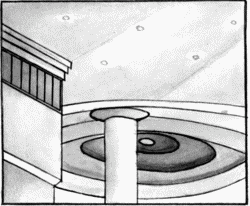
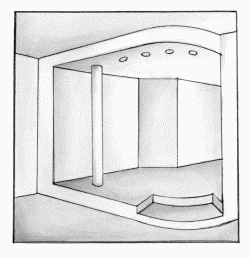
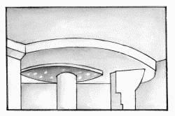
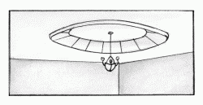

Зонирование квартиры.

При отделке квартир очень популярен способ зонирования отдельных помещений. Это особенно актуально для современных частных домов, построенных по принципу плавного перетекания одной комнаты в другую без стен, в результате чего получается единая пластическая структура.
Таким образом, вместо прежней системы с неудобными коридорами, ведущими в отдельные комнаты, дизайнеры совместно с архитекторами разработали систему зонирования помещений.
Согласно этому методу все жилое пространство символически делится на две зоны: частную и общественную.
В данном доме функциональные зоны принято выделять отделкой пола, стен, освещением. При этом далеко не последнюю роль играет многоуровневый потолок. Например, овал на потолке может повторить овал стола в столовой (рис. 14).

Рис. 14. Решение многоуровневого потолка в столовой.
Примерно по такому же принципу следует выделять ванную комнату, зимний сад, барную стойку и даже проход между помещениями.
Довольно часто очертания разноуровневых потолков подчеркиваются полом. Это могут быть, например, подиум (рис. 15) или сочетание различных материалов для пола, или материалы разных оттенков.

Рис. 15. Подиум, подчеркивающий многоуровневый потолок.
Даже если ваш потолок идеален, многоуровневый потолок можно использовать просто в качестве украшения интерьера. Применяют самые разнообразные формы конструкций данных потолков:
– геометрические формы;
– гнутые, фантастические формы;
– сочетания кривой линии и треугольника;
– перепады уровней относительно базового.
При устройстве многоуровневых потолков не менее часто используют лепнину (рис. 16), карнизные системы или другие композиции.

Рис. 16. Решение многоуровневого потолка с лепниной и подсветкой.
Многоуровневый потолок расширяет возможности света. В данном случае он оказывает влияние на весь интерьер в целом: мягкий свет, высвечивающий весь базовый потолок, одновременно отражается от него и выгодно подчеркивает все пространство (рис. 17). Вообще нужно сказать, что при устройстве данных потолков освещение занимает далеко не последнее место и расположить правильно источники освещения довольно непросто: светильники следует спрятать, не заглубив их, в противном случае света будет недостаточно.

Рис. 17. Применение многоуровневых потолков с отраженным светом.
В заключение добавим, что, работая с многоуровневыми потолками, следует учитывать также дизайн мебели, стен, полов.